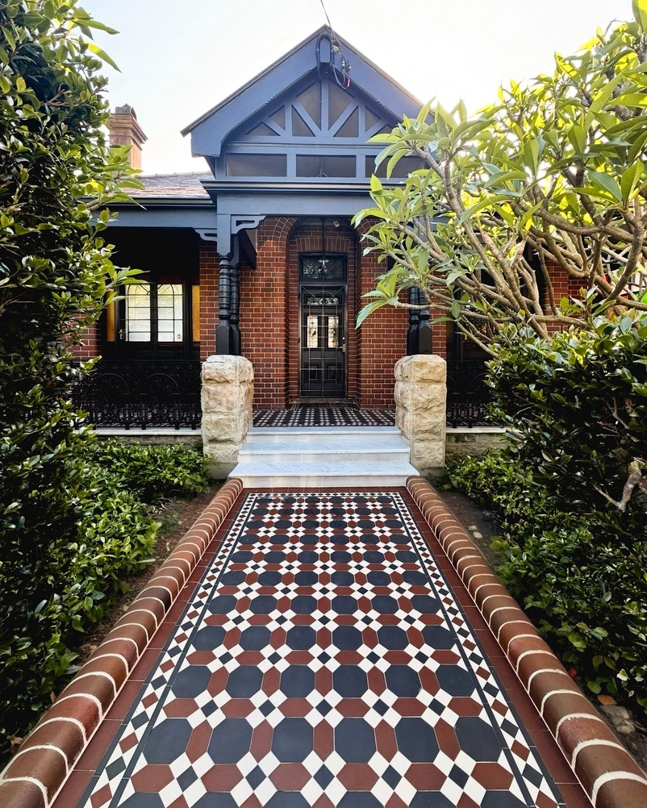
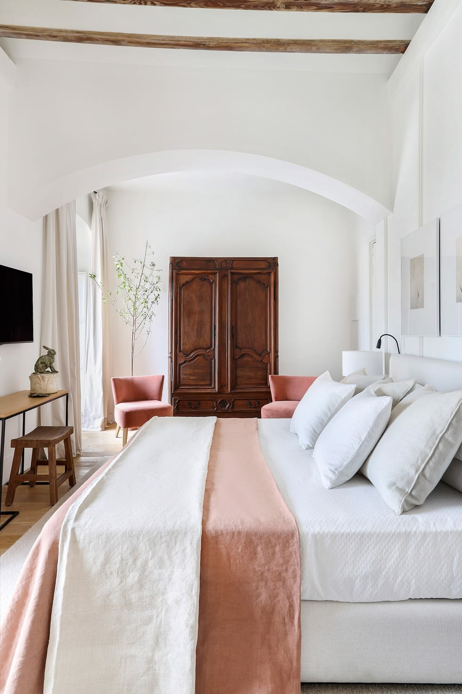
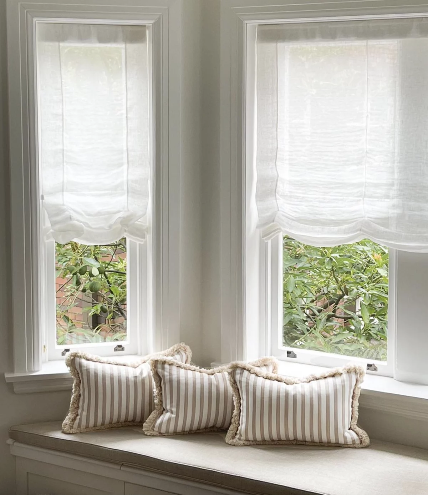
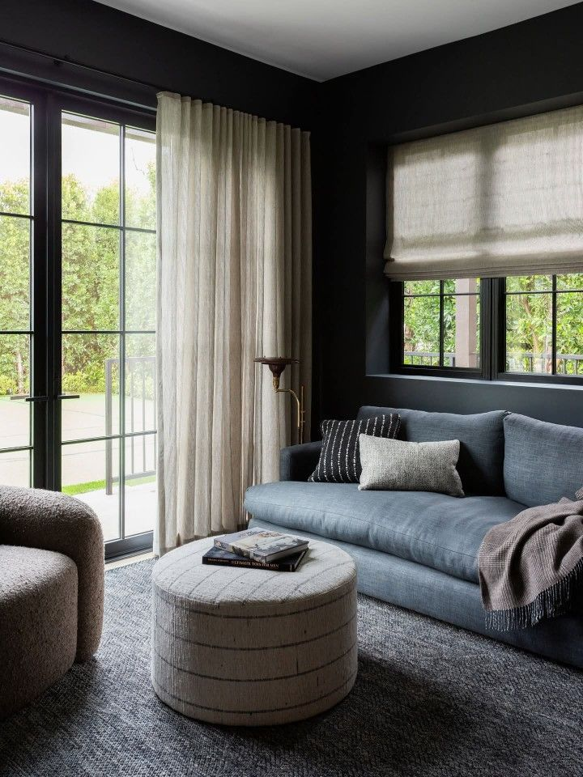
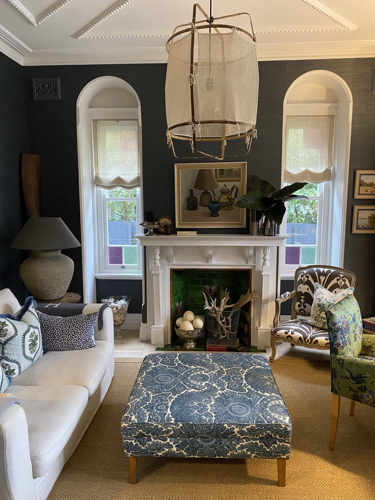
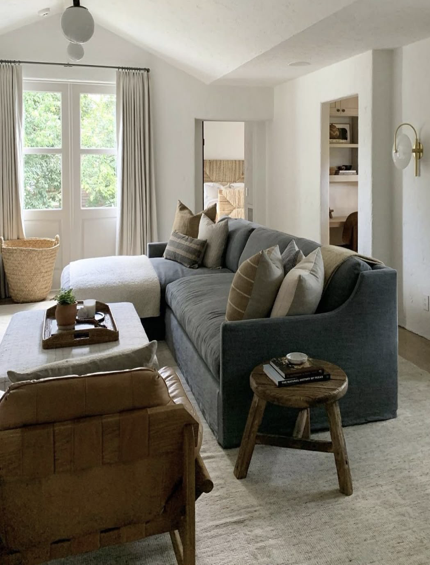
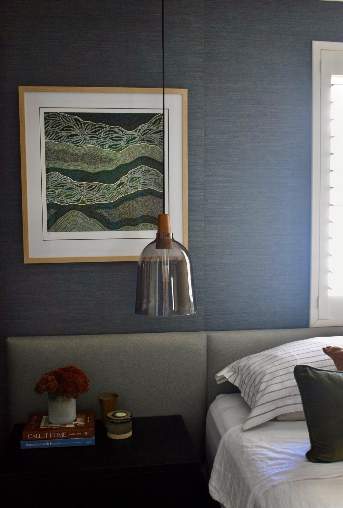

From the Studio
Design thinking, process insights and considered advice, published from the studio.

What to Look for When Purchasing a Federation Home
Federation homes have an enduring appeal that holds its value across almost every market. Here is what to look for before you commit to a purchase.
Read more
Not All Whites Are Equal: How to Choose the Right White for Your Home
White is one of the most requested colours, and one of the most misunderstood. Here is what to consider before reaching for that first paint swatch.
Read more
A Considered Guide to Window Furnishings
Window furnishings are one of the decisions clients most consistently underestimate, and one of the most impactful when done well. Here is how to approach them with clarity.
Read more
Winter Interiors: Small Changes That Make a Home Feel Warm & Cosy
The cooler months ask something of a home that summer does not. This week we share the considered adjustments you can make that make the real difference — layered textiles, curtains and lighting.
Read more
The Art of Layering: How to Style a Room That Feels Complete
Wondering why your room feels unfinished? Emily Webster explains the art of layering, and how to build a space that feels considered, complete and entirely your own.
Read more
What Happens at an Interior Design Consultation?
Many people know they want a more considered home, but feel uncertain about where to begin. Here is exactly what our Initial Consultation includes, and what you walk away with.
Read more
When Is the Right Time to Hire an Interior Designer?
Most people underestimate both what a designer actually does, and what it costs to get those decisions wrong. Here is how to think about timing.
Read more